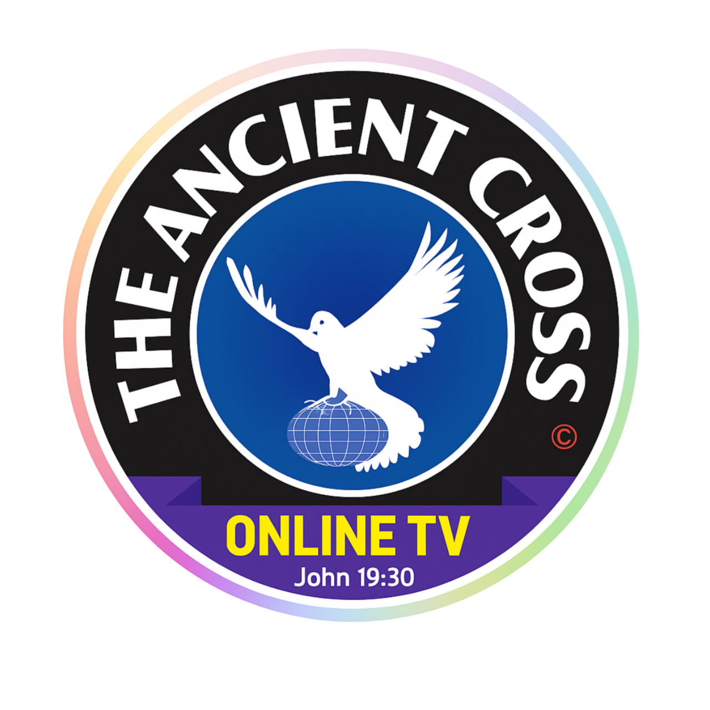

THE ANCIENT CROSS STV is a Christ-centered digital media platform devoted to proclaiming the message of the Cross through music, visual storytelling, reflective teaching, and spiritually intentional creative expression. We exist in the digital space not as a church institution, not as a denomination, and not as an organization seeking religious control — but as a media voice committed to biblical truth, reverent worship, and spiritual awakening.
In a generation surrounded by noise, distraction, confusion, and moral uncertainty, our calling is simple yet weighty: to lift up Christ through sound and image. We believe media is not neutral. It shapes hearts, directs attention, and influences thought patterns. Therefore, we intentionally create content that draws attention upward — toward holiness, repentance, faith, surrender, watchfulness, and hope.
The name “The Ancient Cross” reflects our conviction that the message of salvation is not new, not modernized, and not reinvented. It is ancient. It stands unchanged across centuries. It is rooted in sacrifice, redemption, mercy, and covenant love. The Cross remains the center of true spiritual transformation. Everything we produce flows from that foundation.
As a platform, we function entirely in the digital sphere. Through worship compositions, lyric visuals, contemplative messages, and spiritually reflective presentations, we seek to encourage believers and challenge the complacent. Our work is created prayerfully, thoughtfully, and with reverence for Scripture.
We do not claim perfection. We do not claim to replace the local church. Rather, we aim to complement spiritual growth by offering content that strengthens faith outside traditional gathering spaces. Our desire is that every viewer, listener, and reader leaves with a clearer awareness of God’s holiness and a deeper hunger for genuine devotion.
Our mission is to use digital media as an instrument for spiritual clarity in an age of confusion. We believe creativity can serve eternity when surrendered to divine purpose. Therefore, THE ANCIENT CROSS STV exists to communicate biblical truth through music and imagery in a way that is both reverent and relevant.
Everything we create is centered on exalting Jesus Christ — not personalities, not trends, not emotional spectacle. Worship is not performance; it is surrender. Our music and visuals are designed to direct attention to God’s glory rather than human achievement.
True spiritual growth requires self-examination and humility. Our content often reflects themes of repentance, consecration, spiritual vigilance, and wholehearted obedience. We believe awakening begins when hearts are honest before God.
Scripture calls believers to remain spiritually alert. We live in times of rapid cultural change, moral instability, and widespread distraction. Our platform encourages readiness, faithfulness, and perseverance grounded in Scripture.
We aim to communicate biblical truths without compromise or distortion. While we respect dialogue and thoughtful discussion, our creative direction is shaped by historic Christian convictions rooted in Scripture.
Much of modern entertainment is temporary and surface-level. We seek to create work that carries spiritual weight — content that lingers beyond the screen and continues to resonate within the heart.
THE ANCIENT CROSS STV operates at the intersection of worship, theology, reflection, and digital artistry. Our creative process is intentional. It involves prayer, scriptural meditation, lyrical development, visual design, editing discipline, and spiritual discernment.
Our original worship compositions are written to express reverence, repentance, surrender, longing, and hope. We aim for lyrical depth rather than repetition for its own sake. Our music often draws language from Scripture while expressing contemporary spiritual burdens and gratitude.
Visual storytelling enhances understanding. Through carefully crafted lyric videos and visual worship presentations, we attempt to create a contemplative environment rather than a sensational one. Movement, color, and imagery are chosen to support the message — not overshadow it.
Some content is meditative in tone — addressing spiritual themes such as perseverance, humility, prayer, eternal perspective, faith during trials, and dependence on God. These messages are designed for thoughtfulness rather than impulsive reaction.
While we do not claim prophetic authority over Scripture, we remain sensitive to the spiritual climate of our times. Our content sometimes reflects urgency — encouraging believers to live faithfully in anticipation of Christ’s return.
God’s holiness shapes our tone. We avoid casual treatment of sacred subjects. Reverence does not mean lifelessness — it means awareness of divine majesty.
Integrity matters. We seek alignment between what we proclaim publicly and what we pursue privately. Authentic worship cannot be manufactured.
Because creativity reflects the image of the Creator, we strive for quality in writing, production, and presentation. Excellence honors God when rooted in humility.
We recognize that spiritual insight is a gift, not an achievement. All credit belongs to God for wisdom, creativity, and opportunity.
Faithfulness over time builds trust. We aim to remain consistent in message and tone, avoiding unnecessary trend-chasing that dilutes spiritual identity.
THE ANCIENT CROSS STV was founded and is directed by CREATOR KING (Peter Simon), a gospel songwriter, worship musician, and digital creator with a heart for biblical truth and spiritual watchfulness.
The vision behind this platform emerged from a desire to combine worship music with visual communication in a way that preserves theological clarity and spiritual seriousness. Rather than pursuing visibility alone, the focus remains on faithfulness — allowing creative gifts to serve eternal purposes.
Through songwriting, arrangement, editing, and digital publishing, the creator seeks to produce content that encourages believers to remain steadfast in turbulent times. Each project reflects personal conviction that worship should prepare the heart for eternity.
This platform is not centered on personality recognition. While leadership responsibility exists, the emphasis remains on the message itself. The Cross is central. The Creator is secondary. Impact belongs to God.
Our convictions are rooted in historic Christian belief affirming:
• The authority of Scripture as God’s inspired revelation.
• The holiness and sovereignty of God.
• Salvation by grace through faith in Jesus Christ.
• The reality of repentance and spiritual transformation.
• The importance of perseverance in faith.
• The anticipation of Christ’s return.
We recognize diversity within Christian traditions; however, our content maintains alignment with core orthodox Christian doctrine regarding the person of Christ and the saving work accomplished through His sacrificial death and resurrection.
We live in a time when screens shape daily experience. Attention spans are fragmented. Ideas spread rapidly. Cultural narratives shift quickly. For this reason, digital faithfulness becomes crucial. Media can either cloud conviction or clarify it.
By entering this space intentionally, we believe it is possible to use modern tools to communicate ancient truths. Technology is not the enemy of faith — but it must be governed by conviction.
Rather than abandoning digital platforms to superficial content alone, THE ANCIENT CROSS STV seeks to occupy space with thoughtful, reverent, biblically grounded creative work.
Though we are a digital platform, we value genuine spiritual community. We encourage followers to remain actively involved in local fellowship, discipleship, and accountability within their own church communities.
Our platform does not replace pastoral care or congregational life. Instead, it aims to supplement personal devotion and encourage deeper engagement with Scripture.
We welcome respectful dialogue, thoughtful questions, and shared encouragement. Unity in truth strengthens believers across geographical boundaries.
As long as God grants opportunity and strength, THE ANCIENT CROSS STV will continue striving to create worship music and visual content that magnifies Christ and calls hearts to faithfulness. Our commitment is long-term. It is not driven by trends but by conviction.
We believe that seeds planted through faithful media may bear fruit in unseen ways. Not every impact is visible. Not every response is measurable. Nevertheless, obedience matters.
If our content strengthens even one believer toward deeper devotion, encourages repentance in one searching heart, or inspires renewed spiritual focus in one weary soul, then the labor is worthwhile.
Soli Deo Gloria — To God alone be the glory.